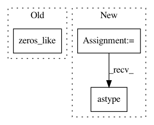

ad66bf0a8faf1f230891faea92c31d8a3a0baa3f,niftynet/engine/sampler_selective.py,,candidate_indices,#Any#Any#Any#,112
Before Change
mean_counts_size_temp = np.nan_to_num(
counts_size * 1.0 / counts_window)
mean_counts_size_temp = np.where(counts_window == 0,
np.zeros_like(data),
mean_counts_size_temp)
// print(np.max(counts_size), " max size")
// print(np.sum(valid_places), value)
After Change
for value in unique:
// print(np.sum(data), "sum in data", np.prod(data.shape),
// " elements in data")
seg_label = (data == value).astype(data.dtype)
// print(np.sum(seg_label), " num values in seg_label ", value)
label_size = create_label_size_map(seg_label)
// print(value, np.sum(seg_label), seg_label.shape,
// window_ones.shape, num_min)
// print("Begin fft convolve")
counts_window = fftconvolve(seg_label, window_ones, "same")
// print("finished fft convolve")
valid_places = \
(counts_window > np.max([num_min, 1])).astype(data.dtype)
counts_size = fftconvolve(
label_size * valid_places, window_ones, "same")
mean_counts_size_temp = np.nan_to_num(
counts_size * 1.0 / counts_window)
In pattern: SUPERPATTERN
Frequency: 3
Non-data size: 3
Instances
Project Name: NifTK/NiftyNet
Commit Name: ad66bf0a8faf1f230891faea92c31d8a3a0baa3f
Time: 2017-10-04
Author: wenqi.li@ucl.ac.uk
File Name: niftynet/engine/sampler_selective.py
Class Name:
Method Name: candidate_indices
Project Name: IBM/adversarial-robustness-toolbox
Commit Name: b09284f6ba59659a9819e68244a7a785016c87c5
Time: 2020-05-24
Author: beat.buesser@ie.ibm.com
File Name: art/attacks/evasion/shadow_attack.py
Class Name: ShadowAttack
Method Name: generate
Project Name: dmlc/gluon-nlp
Commit Name: 1f9ad444b5dee8b2562b7bfa1cf9f576fa32a347
Time: 2020-07-31
Author: 37728728+ZheyuYe@users.noreply.github.com
File Name: src/gluonnlp/op.py
Class Name:
Method Name: updated_vectors_by_position